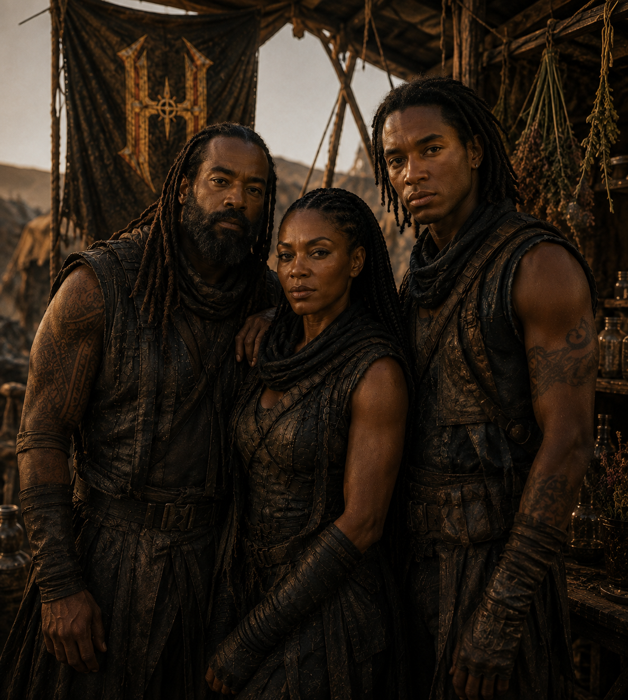
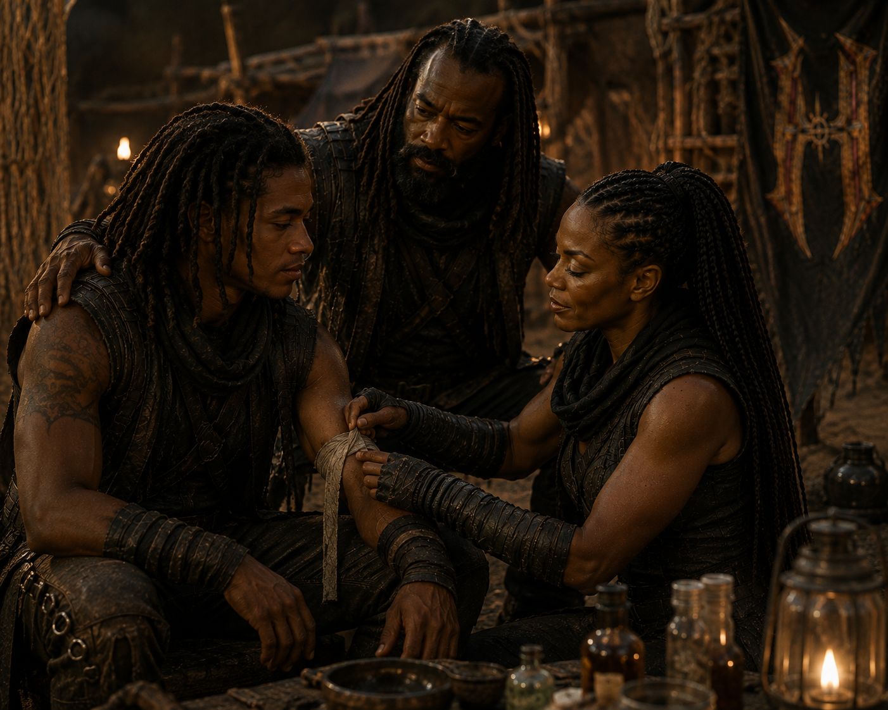

DARIUS BENNETT
Técnico de rádio e redes de campo. Mantém as comunidades conectadas e uma frequência aberta para Chloe voltar.
ABRIR DOSSIÊ INDIVIDUAL → BACKGROUND PROPOSTO // DB-01Entre ruínas, rotas e vigílias, há duas presenças que fazem Chloe transformar sobrevivência em promessa: Darius, seu marido antes do Dia D, e Micah, filho dos dois, nascido antes do colapso.

Chloe não promete que o mundo será seguro. Ela promete fazer do próximo abrigo um lugar onde eles possam respirar, descansar e existir sem precisar olhar para trás a cada passo.
Técnico de rádio e redes de campo. Mantém as comunidades conectadas e uma frequência aberta para Chloe voltar.
ABRIR DOSSIÊ INDIVIDUAL → BACKGROUND PROPOSTO // DB-01Registra quem partiu e quem voltou. Leva recados entre abrigos sem transformar pessoas em números nem revelar coordenadas sensíveis.
ABRIR DOSSIÊ INDIVIDUAL → BACKGROUND PROPOSTO // MB-02
O perigo não é uma abstração para Chloe. Ele tem rotas, portas e nomes. Por isso a família não fica fora da história: ela é o motivo pelo qual Chloe continua de pé.
VER OS REGISTROS DA FAMÍLIA →Em um mundo onde nomes podem atrair perigo, os vínculos falam primeiro.
VOLTAR AO DOSSIÊ DE CHLOE BENNETT ←